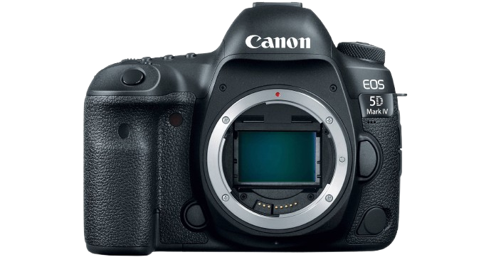
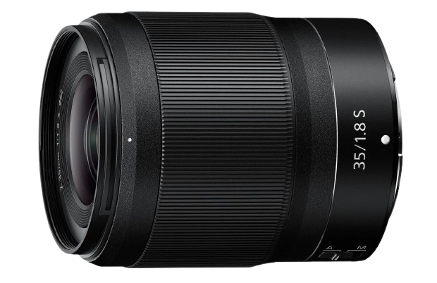
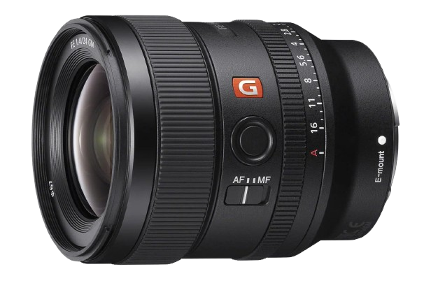
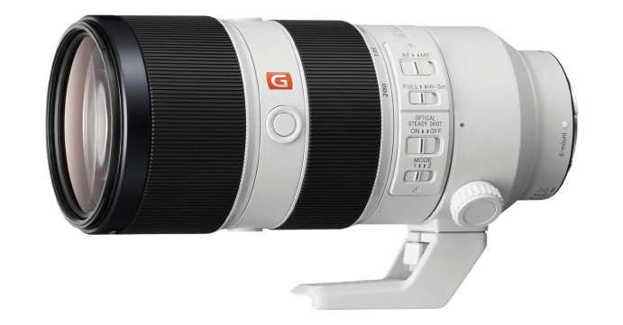

Camera and Lenses

Camera body
A camera body is the main, central unit of a camera system that houses the imaging sensor (or film), shutter mechanism, electronics, and controls, excluding the lens.

Standard Lens
Standard lenses can be used for a variety of different types of photography. Their focal lengths fall somewhere in the middle, usually between 35mm and 85mm. A zoom lens within this range will have a small enough focal length at the bottom end to take a wider angle, full-frame photo, and a large enough focal length at the top end to zoom in on subjects.

Wide Angle Lenses
Wide angle lenses have a focal length of less than 40mm ish. A wide angle lens gives a wider field of view than a standard lens, which is a relief. The smaller the focal length, the wider the field of view. And the smaller the focal length the smaller things look, and the more depth of field you can get.

Telephoto Lens
Telephoto lenses have focal lengths of more than 60mm ish. Telephoto lenses give a narrower field of view than a standard lens. The larger the number, the narrower the field of view. And the larger the focal length the closer things are, and the less depth of field you get.
Page 2